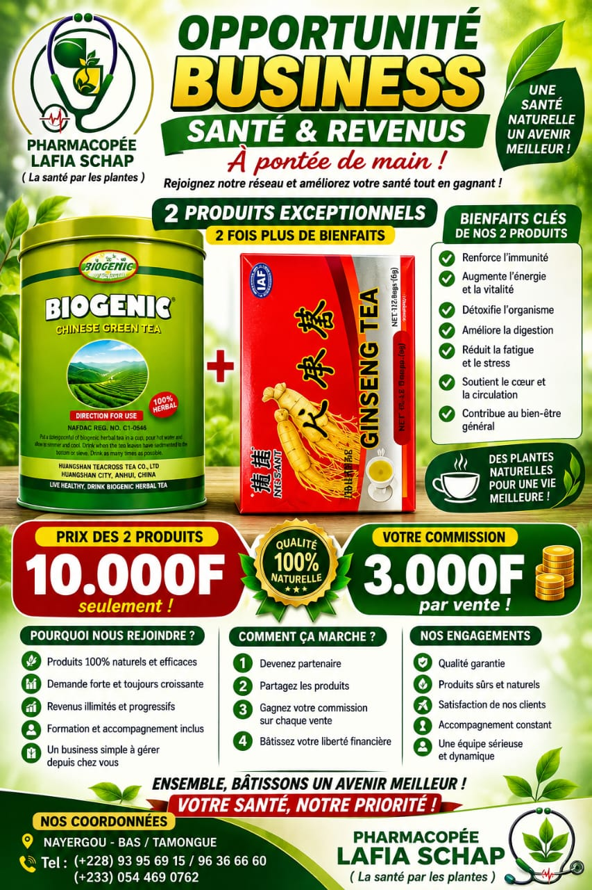
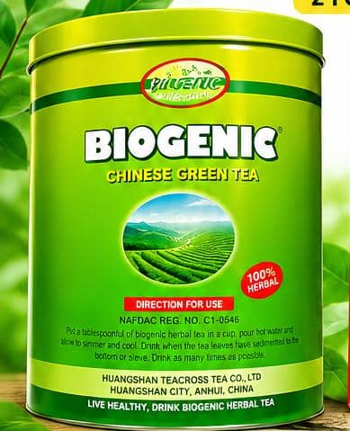
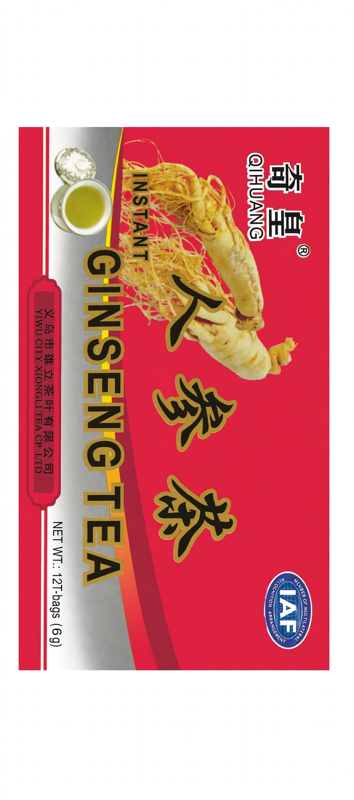
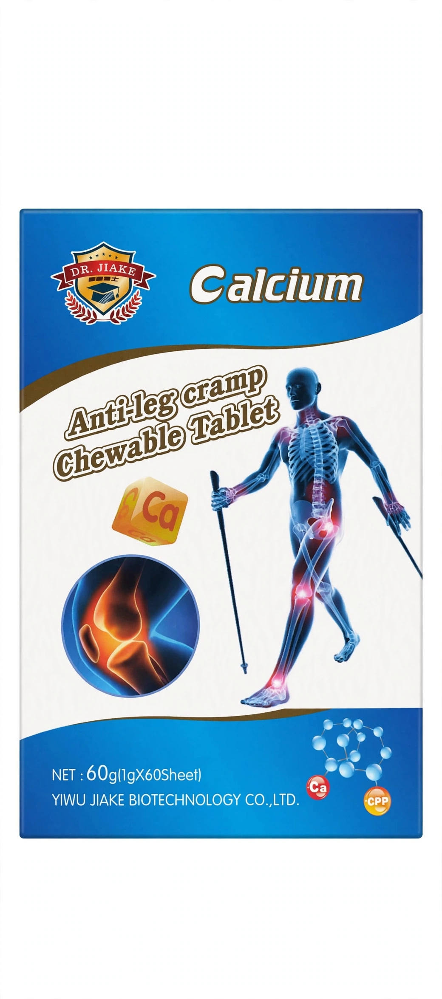
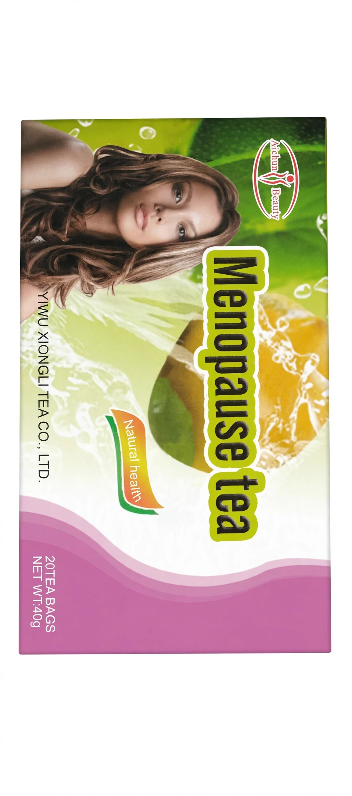

Le désir de chacun est de vivre le plus longtemps possible. Cependant, l’espérance de vie sur terre diminue avec l’âge et l’évolution technologique. La vérité est que l’amélioration des procédés alimentaires n’a pas aidé, mais a plutôt aggravé les choses. Les Chinois et la plupart des Asiatiques possèdent l’une des plus longues espérances de vie selon l’OMS.
Les recherches ont montré que la plupart des maladies graves dans le monde, comme le cancer, les maladies cardiaques, le diabète, etc., trouvent leur origine dans notre alimentation. L’accumulation du cholestérol, des radicaux libres et du taux élevé de sucre dans le sang, causés par notre alimentation et notre mode de vie, sont impliqués dans la majorité des maladies dangereuses.
Les aliments trop transformés privent le corps des nutriments essentiels tout en le surchargeant en calories, graisses et radicaux libres, entraînant ainsi diverses maladies.
L’un des plus grands secrets de longévité des Chinois est leur thé vert, qu’ils boivent continuellement à la place de l’eau. Vous pouvez aujourd’hui vivre sainement en adoptant le thé vert comme habitude quotidienne.
Le thé vert biogénique, issu de Camellia sinensis, est traditionnellement consommé dans de nombreux pays. Il contient notamment des polyphénols, catéchines et caféine, étudiés pour leurs propriétés antioxydantes.

Le thé vert Biogenic est sélectionné à partir de feuilles de la plante Camellia Sinensis. L'objectif du SCHAP GREEN BUSINESS est de proposer une habitude simple de consommation du thé, associée à une démarche de bien être, d'hygiène de vie et de prévention.
Lorsqu'on compose avec GENSENG TEA, le prix devient
Les antioxidants du thé vert sont étudiés pour leur rôle potentiel dans la santé cardiovasculaire zt le maintien d'une bonne circulation.
Une alimentation équilibrée et une bonne circulation sanguine, notamment vers le cerveau.
Les catéchines contribuent à lutter contre le stress oxydatif. Des recherches étudient également leur rôle potentiel dans certains mécanismes liés au développement de maladies chroniques.
Les polyphénols du thé vert font l'objet de recherches concernant leur rôle dans la protection contre le stress oxydatif.
La caféine et certaines catéchines peuvent avoir un effet modeste sur la dépense énergétique et le métabolisme des graisses.
Le thé vert fait l'objet de recherches concernant son influence potentielle sur le métabolisme du glucose.
Certains travaux étudient le lien entre la consommation de thé vert et la santé des os.
Certaines catéchines présentent une activité antimicrobienne étudiée en laboratoire.
Le thé vert apporte des composés antioxydants qui participent à une alimentation favorable au fonctionnement normal de l'organisme.
La L-théanine, naturellement présente dans le thé, est étudiée pour ses effets sur la relaxation, l'attention et l'état mental.
Les antioxydants contribuent à protéger les cellules contre le stress oxydatif, phénomène associé au vieillissement cellulaire.
Certains constituants du thé vert sont étudiés pour leurs propriétés anti-inflammatoires et immunomodulatrices.
Les catéchines possèdent une activité contre certaines bactéries buccales et peuvent contribuer à une bonne hygiène de la bouche.
Une hydratation suffisante est importante pour la fonction rénale. Le thé vert peut contribuer à l'apport hydrique, mais il ne constitue pas un traitement des maladies rénales.
Le thé peut accompagner la digestion et être intégré à une alimentation équilibrée.
Les polyphénols du thé vert sont étudiés pour leurs propriétés antioxydantes et anti-inflammatoires potentielles.
Certaines substances du thé vert possèdent une activité antimicrobienne pouvant contribuer à une bonne hygiène buccale.
Les recherches sur le thé vert portent notamment sur certains facteurs cardiovasculaires et la fonction des vaisseaux sanguins.
Les antioxydants du thé vert sont étudiés pour leur rôle potentiel dans la protection cellulaire, mais le thé vert ne doit pas être présenté comme un traitement des troubles de la vue.
Une bonne alimentation, l'apport en nutriments et une bonne circulation sont importants pour les processus normaux de réparation des tissus.
Les antioxydants du thé vert sont étudiés pour leurs effets potentiels sur la protection de la peau contre le stress oxydatif.
La caféine et la L-théanine du thé peuvent contribuer à la vigilance et à l'attention. Des recherches étudient également leur rôle potentiel dans certaines fonctions cognitives.
Le thé vert apporte différents composés bioactifs pouvant participer au maintien général de l'organisme.
Grâce notamment à sa teneur en caféine et en L-théanine, le thé vert peut favoriser la vigilance et l'attention.
Le thé vert contient de la caféine. Une consommation excessive peut notamment provoquer nervosité ou troubles du sommeil chez certaines personnes. Il est donc préférable d'éviter une consommation tardive.
Vu les bienfaits de CHINESE GREEN TEA, La pharmacopée Lafia SCHAP propose donc un business à travers ce thé.
PHARMACOPÉE LAFIA SCHAP - La santé par les plantes
SCHAP GREEN BUSINESS
Notre modèle repose sur 3 éléments simples :
En effet, LA PHARMACOPÉE LAFIA SCHAP nous propose un modèle de business du marketing relationnel : Le SCHAP GREEN BUSINESS
100% Créé par PHARMACOPÉE LAFIA SCHAP. Orientation et présentation du fonctionnement + Accompagnement dans le démarrage.
Un thé vert chinois à base de Camellia sinensis, naturellement riche en polyphénols, antioxydants, caféines et catéchines. Il s'inscrit dans une démarche de bien-être et d'hygiène de vie.
Est un thé 100% Énergétique
L'adhésion est de 10 000 F CFA avec un pack de démarrage, et une commission directe de 3 000 F CFA est prévue par vente.
| Ventes réalisées | Commission |
|---|---|
| 1 vente | 3 000 F |
| 5 ventes | 15 000 F |
| 10 ventes | 30 000 F |
| 20 ventes | 60 000 F |
Important : ces montants correspondent à des commissions calculées sur les ventes.
ENSEMBLE, BÂTISSONS UN AVENIR MEILLEUR !
1. Devenez partenaire
2. Partagez les produits
3. Gagnez votre commission
4. Bâtissez votre liberté financière
"Bien-être + Éducation + Entrepreneuriat"
Nous ne cherchons pas simplement à vendre un thé. Nous voulons développer une communauté qui apprend à :

Ginseng Tea est un produit présenté sous forme de sachets de thé au ginseng. Pour toute utilisation à des fins de santé, demandez conseil à un professionnel de santé.

Ce produit aide à améliorer le traitement des douleurs dorsales, les crampes aux mollets, l’ostéoporose et l’hyperplasie osseuse, le ramollissement des os, différents types de fractures, l’hypertension, les maladies cardiovasculaires et cérébrovasculaires, le diabète, les calculs, les tumeurs, etc.

Menopause Tea est un produit présenté sous forme de sachets de thé. Pour toute utilisation à des fins de santé, demandez conseil à un professionnel de santé.
Remplissez les informations ci-dessous.
Numéro : 0544690762
Numéro : 93956915
Après le paiement, conservez votre confirmation et contactez-nous sur WhatsApp pour confirmer votre commande.